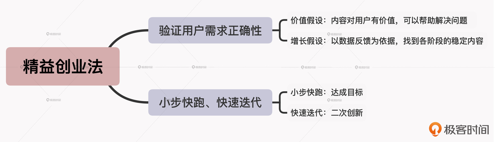

- 00 开篇词 短视频时代下，怎么把握好变现风口？.md.html
- 01 爆款短视频的底层逻辑：用心拍的短视频为啥没人看？.md.html
- 02 爆款短视频的底层逻辑：如何轻松打造自我特色？.md.html
- 03 精益创业法：如何快速跨过从0到1这道坎？.md.html
- 04 SWOT法：这么明显的个人优势你为啥就是看不到？.md.html
- 05 效用函数法：如何用量化的方式进行高效创作？.md.html
- 06 二次创新实验法：如何打造个人的差异化定位？.md.html
- 07 平台定位：如何选择最适合自己的创作平台？.md.html
- 08 如何快速找到各大短视频平台的正确切入点？.md.html
- 09 选题（上）：如何利用思考清单找到合适选题？.md.html
- 10 选题（下）：如何为不同的内容定制合适选题？.md.html
- 11 优劣分析法：如何快速筛选适合创作的视频素材？.md.html
- 12 标题（上）：如何利用微创新巧妙找到爆款标题？.md.html
- 13 标题（下）：如何用对号入座的方式抓住标题亮点？.md.html
- 14 视频封面（上）：如何快速抓住用户注意力？.md.html
- 15 视频封面（下）：如何传递最有价值的信息？.md.html
- 16 视频剪辑：如何轻松掌握视频化剪辑的三大公式？.md.html
- 17 效果反馈法：剪辑很容易，为什么你却一直学不会？.md.html
- 18 剪辑对比（上）：如何避开常见的短视频剪辑陷阱？.md.html
- 19 剪辑对比（下）：如何利用剪辑技巧提升视频质量？.md.html
- 20 拉片法：用电影创作的方式学习爆款短视频运营技巧.md.html
- 21 用户留存率：为什么粉丝很多但忠实拥趸却很少？.md.html
- 22 点赞率（上）：如何有效提升短视频的点赞量？.md.html
- 23 点赞率（下）：三种方法轻松提升用户对内容的认可度.md.html
- 24 上瘾机制：为什么视频观看量很高却没人留言？.md.html
- 25 避坑指南：为什么很多短视频账号中途做不下去了？.md.html
- 26 如何找到适合自己的短视频变现模式？.md.html
- 27 多元化变现：如何明确不同创作阶段的变现任务？.md.html
- 28 多内容变现：不同内容的主打变现模式是什么？.md.html
- 结束语 一切成大事者，都是终身学习者.md.html
- 捐赠
03 精益创业法：如何快速跨过从0到1这道坎？
你好，我是周维。从这节课开始，我们就进入了课程的第二个模块：定位篇。
在短视频内容创作当中，找准定位是做出适合自己内容方向的爆款视频、实现变现的重要条件。因此接下来，我们会花6节课的时间来学习如何做好内容定位，以此为创作出适合自己的爆款短视频做好规划。
今天这节课，我们先从如何跨越从0到1的创作阶段出发，来了解下在刚开始接触短视频创作的时候，准确找到个人定位的方法。
什么是精益创业法？
我们在刚开始创作短视频内容的时候，最怕的就是找不准创作方向，走了弯路、踩了深坑，以及不顾一切、自我感觉良好地去创作内容，这样在前期可能就会投入很多的金钱与时间成本。
那么要如何解决这一问题呢？这就是今天我们要重点学习的精益创业法。
精益创业法是美国IMUV联合创始人兼CTO埃里克·莱斯，在著作《精益创业》中提出的观点。其大致的含义是：对于初创企业来说，不要太冒进、高举高打去做一件事，而是要学会减少损失，先拿一个产品投放到市场上，看看反馈，然后根据反馈进行调整改变。
具体是什么意思呢？其实在短视频创作中，精益创业法的本质就是指小步快跑、快速迭代式的创新，以及每一步都有迹可循的踏实前行。而落实到具体的操作方法上，就是要通过验证用户需求的正确性，以小步快跑、快速迭代的思维，来快速、灵活地调整内容创作的方向，以此帮助我们更好地解决从0到1的创作难题。
那么下面我们就一起看看，将精益创业法应用到短视频创作当中的具体实践方法。
验证用户需求的正确性
我相信，你在一开始做视频的时候肯定也听过“一定要做用户喜爱的内容，这样才更容易受到用户的欢迎”这样的说法。
这些话本身没有错，但问题是，我们要如何确定自己的内容就是用户喜爱的呢？
答案就是我在前面提到的，通过验证用户需求的正确性来确定创作方向。
验证用户需求的正确性，就是预先设定自己的内容方向就是正确的，然后通过价值假设、增长假设两种方法来验证自己的判断是否正确，以此找到合适的创作方向。那么，什么是价值假设和增长假设？又该如何使用呢？下面我来介绍下。
价值假设
我们先来看看价值假设的使用方法。
价值假设，就是假设我们创作的短视频内容对于用户而言有某方面的使用价值，可以帮助用户解决问题，然后通过数据反馈的方法来验证假设是否成功。
具体怎么做呢？给你分享一个真实的故事。
我的一个朋友小王，他本身是一个程序员，平时喜欢拍拍短视频，来记录和分享自己在工作中总结的一些技术经验。一开始他还热情满满，毕竟技术人都是很热衷分享的，他总结的这些知识点也确实都是干货，所以认为用户肯定喜欢看。不过现实总是不尽如人意，他做的这些技术类视频不仅没有出过一条爆款，真正观看的人数也是屈指可数。
后来我给他的建议，就是先通过价值假设的方法，来验证下他的内容创作方向是不是对的。具体步骤是这样的：
- 选取两到三个短视频平台，找找与自己同样属于技术知识分享领域的热门内容，看看这些作品关注什么热点、创作风格大概是什么类型。
补充：这里我建议你在梳理统计的时候，可以直接列一个表格，把每个平台上受用户欢迎的内容类型和关注热点都记录下来，后面在分析的时候更加直观明了。你也可以逆向思考，找几个样本，统计一下不受欢迎的内容是什么样的，提前规避好坑点，也能少走创作上的弯路。
- 确定几个适合自身定位的内容方向之后，制作和发布相应的短视频，观察并收集用户数据反馈。
- 最后，以数据的高低来确定自己的哪些内容方向对用户更有价值。
由此，小王就确定了三个内容创作的方向：
- 围绕人到中年的技术人所面临的职业危机，分享如何进行个人升级迭代的内容；
- 围绕自身的工作，分享跟算法推荐内容有关的经验；
- 以Vlog的形式记录自己在工作中遇到的技术问题，分享自己是如何通过多渠道学习解决问题的内容。
之后，小王围绕这三方面内容分别创作了视频，上传到各个短视频平台。根据数据反馈的高低来看，以记录的形式分享自己在工作中如何通过学习弥补技术短板的Vlog，不管是播放量、评论量、分享量，都要好于其他两类。
这样，他就抓住了自己的内容创作方向，通过记录、分享自己的学习经历，来慢慢塑造自己的人设。
不过这里我还要给你敲敲黑板：一个作品上传到不同的平台，最后得出的数据反馈肯定是不一样的。虽然都是短视频内容，但受困于平台推荐算法及用户市场的差异，就会导致相同内容会产生不同的数据反馈。所以我建议，你一定要选取数据反馈最好的平台，先在一个平台上扎下根，然后再慢慢遍地开花。
增长假设
我们再来说说增长假设。
增长假设就是以数据反馈作为前提依据，来找到各阶段的稳定内容模式。这里要注意的是，在使用增长假设的时候，我们不能只针对一条内容，而是要以多条内容带来的正向数据反馈作为分析依据，然后在一段时间范围内，确定其中一种内容类型作为主要的创作方向。
如此一来，随着时间的拉长，你就能明白什么样的视频内容才是用户在短期、中期与长期所需要的，而不会为了不属于、不适合自己的内容浪费更多的创作精力。
不过这里你肯定有疑问了，那增长假设不是跟价值假设一样，都是拿数据反馈作为参考标准的吗？其实，价值假设与增长假设是有明显的区别界线的，它们的使用场景也不一样，你要重点甄别。
- 参考维度不同：价值假设的参考维度可以是数据反馈，也可以是其他有价值的反馈。比如，我一个同学是从事K12教育行业的，她在应用价值假设时，发现在抖音上的视频虽然播放量不高，但私信的用户却不少，很多都直接转化成她的客户了。那么这个有价值的反馈就是转化率。而增长假设就是以各个创作阶段的数据反馈为主，暂时不看其他维度的数据指标。
- 适用阶段不同：价值假设在创作前期比较适用，因为这个阶段人设还没有塑造起来，忠实拥趸不多，我们通过价值假设，可以少走创作弯路；而增长假设适用于创作的各个阶段，因为数据指标可以最浅显、直观地来反映内容的好坏。
好，说回增长假设。现在我们通过一个例子，来看看它的使用方法吧。
有个开服装店的女生想通过拍摄短视频带动店铺销量。刚开始，她按照别人验证成功的模式，也就是以搭配各种女装作为主打的视频内容。但是同样的内容，别人的视频可以上热门，而她的却没几个人看。
她找到我，让我帮她出出主意。我具体是怎么做的呢？
首先，我让她事先统计了一下一些平台上受欢迎的服装类内容（在第7讲中，我会详解具体的操作方法），然后让她根据自身情况，抓取几类主要的内容模式作为之后创作的方向：
- 街拍类，搭配好衣服并配合流行的BGM；
- 知识类，分享不同场景下的穿搭技巧和方法；
- 剧情类，以自己的店铺作为主要场景地，演绎一个小故事。
确定好内容类型之后，我让她依次做好这些视频并发布到所统计的平台上，通过多条内容的数据反馈发现，知识类的内容比较受用户欢迎。因此接下来，她就围绕一类用户在不同场合、不同季节的穿搭需求来创作搭配知识类的视频内容，很快粉丝数就涨上来了，而且店铺的服装销量也不错。
可见，通过增长假设中数据反馈为主打，然后确定一类内容进行深耕创作，不仅可以快速获得用户的认可与喜爱，而且还可以快速变现。
总而言之，通过价值假设与增长假设，你就能很容易地发现自己创作什么样的内容才是受用户喜爱的。只有找到正确的方向，你才能少走创作弯路。
好，掌握了验证用户需求正确性这一具体做法后，下面我们再来看看应用精益创业法的第二步：小步快跑、快速迭代。
小步快跑、快速迭代
首先我们要明确一点，精益创业法的核心理念就是用最小的成本、小批量的生产方式适应快速变化的市场，防止火箭式创业带来时间、金钱、人员等各种成本的浪费。
那么对于短视频内容创作来说，最贵的成本就是时间成本了。为什么呢？
我一直认为，真正的成功者都是可以用一份时间来赚两份钱。当然，我们不必对自己下如此高的要求，但是我们要知道，只有节省更多的时间投入才能提升创作的效率，也才能赶得上平台日益变化的创作风格。
所以，小步快跑、快速迭代的创作思维，就可以让我们在刚入门短视频内容创作时，解决如何快速衡量内容正确和错误的问题，更高效地利用时间。下面我来分别给你解释下“小步快跑”和“快速迭代”的具体意义，以及使用的方法。
小步快跑：达成目标
什么是小步快跑呢？从字面上看，这个词的意思自然就是步伐小一点，频率高一点。毕竟，在早期创作时，我们对于个人定位、内容稳定性等方面都是未知的，如果采用大步向前的冒进思维，往往会让我们顾此失彼、得不偿失。而小步快跑，就表明我们不会承担更多的试错成本，而且还可以根据作品的各项正向数据反馈（如播放、点赞、分享量）进行灵活调整，不会失去时间优势。
那么，想要实现“小步快跑”，我们就必须满足一个前提条件，即“达成目标”。
什么才算是达成目标？在我看来，达成目标就是事先设置一定时间内要完成的具体任务，然后将任务拆解成几个具象化的问题，解决了就算是达成目标了。
我直接给你举个例子吧。
我的一位朋友想通过Vlog的形式来记录自己的生活，但他也知道肯定不能只拍一些琐碎无味的生活流水账。所以他决定去分享一些生活小窍门，这样也可以带给用户一些价值。
在创作前期，他根据自己在不同的生活场景下会面对的生活难题，制定了几个短视频的内容方案。但他不能确定其中哪一类内容是用户喜欢的，只能把选择范围扩大，先创作了一期“平时携带耳机容易缠线，要如何解决”的短视频，上传到了一家短视频平台上，但是并没有成为爆款，用户分享量并不高。
所以接下来，我建议他可以根据增加用户分享量这个目标，去改善自己的视频内容：
- 梳理分享内容，使其更加条理化。比如，直接采用设路标的形式，列举出“一、二、三”点，让用户不用去过多思考，便于理解。
- 在视频快结束时，加入引导分享的话术：如果你觉得这个视频给你带来了一些帮助，欢迎你转发给同样需要的朋友们。
通过这样有针对性地完成目标，他后面发布的短视频，用户分享量果然提高了很多，进而也就增加了内容变成爆款的几率。
那么在达成了设置的有效目标之后，就是要根据自身的定位进行快速迭代了。
快速迭代：二次创新
这里的快速迭代并不是说每一次都要推翻前一次的创作风格、内容主题，而是在原有的基础之上进行二次创新。
给你举个例子。
短视频平台上，舞蹈领域的内容创作者有很多，适应的用户群体也都不一样，比如有少儿舞蹈、中年交际舞、老年广场舞，等等。那么这个时候，我们要如何突出自己的内容，将其打造成爆款呢？
抖音上有个叫燕子的创作者，他是围绕中老年用户群体来做广场舞教学类的内容。
刚开始，他只发布特别简单的广场舞视频内容，目的就是希望让用户看了之后马上就能学会。
然后不断收集用户反馈，利用小步快跑的方式进行有针对性的完善，让自己创作的广场舞视频得到大部分中老年用户的青睐。
接下来，他并没有丢掉之前受用户欢迎的简单广场舞内容，而是新增了一些以当下流行歌曲为主题编排的广场舞教学内容，以满足进阶用户的需求。
这样，通过小步快跑、快速迭代，燕子就既可以巩固原先拥有的忠实用户群体，又可以在原有基础之上，根据延伸出的新内容品类，扩大自己的用户池，以此增加短视频成为热门内容的几率。
小结
今天我们学习的精益创业法，是帮助自己找到合适的内容创作方向的有效方法，它可以让我们在创作的初期少走一些弯路，更好地解决从0到1的创作难题。
在学习的过程中，你要明确两个关键的实践要素：
第一，在早期的短视频创作中，只有先去验证用户需求的正确性，才能明确什么样的内容是适合自己且受用户喜爱的。我们可以采用前提假设的方式，通过价值假设、增长假设两种方法来验证自己的内容创作方向是否正确。
第二，小步快跑、快速迭代的思维可以帮助我们更好地解决从0到1的创作难题。我们可以通过达成目标、二次创新的手段，来有针对性地调整创作方向，挖掘用户更多的需求，解决用户更多的问题，以稳妥的方式向前推进，从而避免创作方向的偏移甚至是失控。
按照惯例，我总结了这节课的核心知识点，你可以根据思维导图进行回顾和复习。

思考题
请你根据今天学习的内容，来分析一下自己是如何跨过短视频创作从0到1的阶段的？期待你的分享，我们留言区见！
如果今天的内容让你有所收获，也欢迎分享给你身边有需要的朋友。
© 2019 - 2023 Liangliang Lee. Powered by gin and hexo-theme-book.